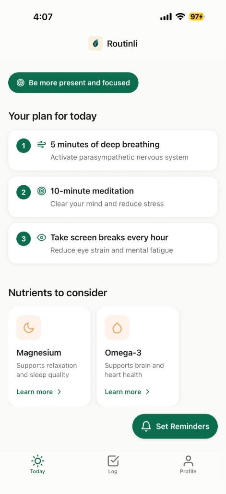

AI App · iOS
I'm building Routinli, an AI-powered supplement coach that helps users turn wearable health data into clear, actionable routines. The product connects to data sources like Apple Health, Oura, and Whoop, explains what the numbers mean in plain English, and recommends personalized supplement plans based on each user's goals. It also helps users stay consistent through reminders, streaks, and progress summaries, with the ability to purchase supplements directly in the app. To build stronger daily habits, the app is designed with a Duolingo-like streak system that encourages users to check in every day, stay accountable, and build consistency around taking their supplements.
I started working on this because I kept seeing the same gap in consumer health: people get more and more data, but not enough clarity on what action to take. At the same time, many already spend money on supplements, but with little personalization and poor consistency. I wanted to build something that connects interpretation, action, and adherence into one loop.
What I find compelling about this space is that health is one of the few consumer categories where users genuinely care about outcomes and already have spending behavior. Instead of building an AI product that feels interesting but optional, I wanted to focus on a problem where the value is easier to understand and the habit loop is much stronger. Routinli is still in its early stage and has not launched on the App Store yet. For now, I'm using it myself as a personal tool to test the product, validate the experience, and iterate before making it available more broadly.